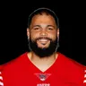

BALL KEEP
Superflex · PPR · Sleeper
Player File · WR SF

Mike Evans
WR · SF · 33 · Texas A&M
2026 · through Week 11
Counting stats
Yards529
Touches33
Catches33
Targets46
TDs4
Snap %53.3%
Rush yds0
Rec yds529
Catch %71.7%
Yds/touch16.0
PPR111.9
Games7
Yearly
| Year | G | Snap % | Touches | Tgt | Rec | Yds | TD | Rush | RuYd | ReYd | PPR |
|---|---|---|---|---|---|---|---|---|---|---|---|
| 2026 | 7 | 53.3% | 33 | 46 | 33 | 529 | 4 | 0 | 0 | 529 | 111.9 |
| 2025 | 8 | 65.4% | 30 | 61 | 30 | 368 | 3 | 0 | 0 | 368 | 84.8 |
| 2024 | 14 | 70.4% | 74 | 110 | 74 | 1,004 | 11 | 0 | 0 | 1,004 | 240.4 |
| 2023 | 17 | 77.7% | 79 | 136 | 79 | 1,255 | 13 | 0 | 0 | 1,255 | 282.5 |
Game by game · 2026
| Wk | Opp | Snap % | Touches | Tgt | Rec | Yds | TD | Rush | RuYd | ReYd | PPR |
|---|---|---|---|---|---|---|---|---|---|---|---|
| 1 | @ LAR | 75.4% | 6 | 7 | 6 | 49 | 1 | 0 | 0 | 49 | 16.9 |
| 2 | vs MIA | 53.8% | 3 | 3 | 3 | 54 | 0 | 0 | 0 | 54 | 8.4 |
| 3 | vs ARI | 33.3% | 3 | 6 | 3 | 34 | 1 | 0 | 0 | 34 | 12.4 |
| 4 | vs DEN | 59.1% | 5 | 8 | 5 | 76 | 0 | 0 | 0 | 76 | 12.6 |
| 5 | @ SEA | 63.3% | 7 | 10 | 7 | 113 | 1 | 0 | 0 | 113 | 26.3 |
| 6 | vs WAS | 40.3% | 3 | 5 | 3 | 94 | 0 | 0 | 0 | 94 | 12.4 |
| 7 | @ ATL | - | - | - | - | - | - | - | - | - | - |
| 8 | BYE | - | - | - | - | - | - | - | - | - | - |
| 9 | vs LV | - | - | - | - | - | - | - | - | - | - |
| 10 | @ DAL | - | - | - | - | - | - | - | - | - | - |
| 11 | vs MIN | 42.6% | 6 | 7 | 6 | 109 | 1 | 0 | 0 | 109 | 22.9 |
| Total | 53.3% | 33 | 46 | 33 | 529 | 4 | 0 | 0 | 529 | 111.9 |
Regular-season line from Sleeper. Touches are carries plus catches. Yards are rushing plus receiving. Snap % is offensive snaps divided by team offensive snaps.
Keep avg118.52
# Boards31
BK Value2,387
Spread78-136
The Keep#118BK 2,387The Board#49BK 4,811The Classic#50BK 4,758Best Ball#44BK 5,091SF Redraft#68BK 3,923STD#52BK 4,654
Board graph
Spread 78-136 · 31 sources
Every Board
Spread 78-136 · 31 sources
| Source | Rank |
|---|---|
| ESPN (Karabell) | 78 |
| Mike Clay (ESPN) | 99 |
| Fantasy Life | 110 |
| Fantasy Points Superflex | 110 |
| FantasyPros ECR | 111 |
| The Athletic | 112 |
| Underdog ADP | 112 |
| Contender board | 112 |
| Sports Illustrated Dynasty | 112 |
| Pro Football Reference | 112 |
| PFF Dynasty | 115 |
| KeepTradeCut SF | 118 |
| PFN (Katz/Soppe) | 118 |
| RotoWire | 118 |
| DLF Superflex | 118 |
| Rotoworld | 118 |
| Sleeper Superflex | 118 |
| Footballguys | 118 |
| DLF ADP mix | 118 |
| FantasyData Superflex | 118 |
| Superflex market mash | 118 |
| Dynasty Trade Calculator | 122 |
| CBS Sports | 123 |
| Fantasy Alarm | 123 |
| RotoGrinders Superflex | 123 |
| Dynasty Nerds | 128 |
| Fantasy Footballers | 136 |
| Establish The Run | 136 |
| PlayerProfiler | 136 |
| Rebuild board | 136 |
| RotoBaller Dynasty | 136 |
BK News
- Week 12 Fantasy Football Injury Report: The Latest Update On Bhayshul Tuten, Derrick Henry, And All The Stars
- Brock Purdy sits out practice with ankle sprain; 'possibility' 49ers QB won't play vs. Seahawks
- Week 11 Fantasy Football Injury Report: The Latest Updates On Brock Bowers, Bhayshul Tuten, Mike Evans, And…
- NFL Week 11 Injury Report: Josh Johnson starting for Cards, Kenneth Walker ruled out, Dalton Kincaid doubtful
- Week 11 Fantasy Football Injury Report: The Latest Updates On Brock Bowers, Bhayshul Tuten, Mike Evans, And…
All player pages · The Keep · The Board · Recent deals · Hot 'n' Cold · BK News · Trade calculator